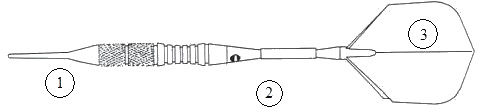

DARTS
Darts eszközök
A Dartstábla
Minden darts tábla, ami steel darts versenyeken használható, a következőképpen nézzen ki:
- rost típusú
- 1-20-ig terjedő szektorokra felosztott
- belső központi gyűrű (Bull eyes), ami 50 pontot ér
- külső központi gyűrű (Bull), ami 25 pontot ér
- külső gyűrű (dupla), ami a szektor kétszeresének megfelelő értéket adja
- belső gyűrű (tripla), ami a szektor háromszorosának megfelelő értéket adja
- drót, ami az értékeket (szektorokat) elválasztja egymástól, együtt egy hálót alkot, legyen a darts tábla elejére rögzítve olyan formában, hogy laposan feküdjön rajta.
A darts táblát úgy állítsuk be, hogy a 20-as számmal jelölt szektor legyen a sötétebb a két szín közül, és középen, a tábla tetején helyezkedjen el.
A táblát úgy helyezzük el a falon, hogy a középpontja 1,73 méter magasan legyen.
A dobóléc
- A dobóléc méretei: 38 mm magas és minimum 610 mm, maximum 1000 mm hosszú.
- Elhelyezés a táblától 2,37 m távolságra, horizontális síkban a darts tábla középpontjától lelógatott függősúly tengelyvonalában.
- Az átfogó távolsága a bull középpontjától a dobóléc közepéig 2,93 m legyen.
A dart
Steel szakág esetén
Hossza nem lehet több, mint 30,5 cm, a súlya nem lehet több, mint 50 g.
Minden dart-nak legyen tű alakú hegye (1), ami a testhez (2) rögződik. A test hátsó végénél legyen a tollszár (3), amihez a tollat rögzítik.
A darts készlet három darabból áll.

Soft szakág esetén
A játékos hozza a saját dartját, amelynek hossza nem lehet több 20 cm-nél, a súlya nem lehet több 18 g-nál. Az eltérés mindkét esetben plusz 10% lehet.
Minden dartnak legyen műanyag, tű alakú hegye, ami a testhez rögződik.